Les Arcs sont la manière de garder à distance un ennemi la plus efficace qu'il existe. Si vous avez un ennemi trop fort et assez lent, c'est simple, MITRAILLEZ-LE DE FLÈCHES haha. Les arcs sont de loin ma manière de me battre préférée car je suis un frouss... un fin stratège. Il en existe des super forts arcs et y en a super nul. On va bien sûr s'intéresser à cette première catégorie. Je vais vous présenter mes 5 arcs favoris pour mes combats à distance, cet arsenal, juste 5 arcs, mais qui sont totalement dévastateur :
| Nom | Description | Image |
|---|---|---|
| Arc de Lumière Attaque: 100 Solidité: 100 Effet secondaire : Arc efficace contre la créature maléfique |
Arc offert par Zelda pour vous aider à triompher le Fléau. En effet, il vous aide très bien grâce à sa puissance inégalée et son nombre infini de flèche . Je vais tenter d'utiliser tout sa durrabilité pour voir si il se casse... | 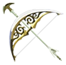 |
| Arc de Garde Royal Attaque: 70 Solidité: 20 Effet secondaire : Aucun |
Excellent arc. Tape fort | 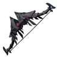 |
| Arc Royal Attaque: 53 Solidité: 47 Effet secondaire : Aucun |
Arme élémentaire à une main électrique, elle électrifie les cibles lorsque vous les attaquez. Au sol, elle produit de l'électricité conductible par d'autres armes ou boucliers en métal ou même tout autre objet en métal. Récupérable à l'amphithéatre de la plaine d'Hyrule. | 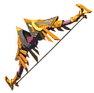 |
| Arc Archéonique Attaque: 44 Solidité: 100 Effet secondaire :Tir les flèches en ligne droite |
Arme élémentaire à une main de flamme, elle brûle tout ce qu'elle touche, que ce soit les ennemis, les arbres ou même le décor (buissons). Portée, elle permet à Link de se réchauffer notamment dans les lieux froids. Récupérable dans l'amphithéatre de la plaine d'Hyrule en battant le Lynel gardant le lieu. | 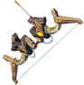 |
| Arc du Dieu Bestial Attaque: 50 Solidité: 73 Effet secondaire : Multi-tir -> 3 flèches consommant qu'une seule |
Arme élémentaire à une main de glace, elle gèle tout ce qu'elle touche. Elle refroidit Link dans les endroits chauds. Récupérable à l'amphithéatre de la plaine d'Hyrule. | 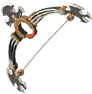 |
Les Arcs sont la manière de garder à distance un ennemi la plus efficace qu'il existe. Si vous avez un ennemi trop fort et assez lent, c'est simple, MITRAILLEZ-LE DE FLÈCHES haha. Les arcs sont de loin ma manière de me battre préférée car je suis un frouss... un fin stratège. Il en existe des super forts arcs et y en a super nul. On va bien sûr s'intéresser à cette première catégorie. Je vais vous présenter mes 5 arcs favoris pour mes combats à distance, cet arsenal, juste 5 arcs, mais qui sont totalement dévastateur :
| Nom | Description | Image |
|---|---|---|
| Flèche | Flèche basique, utile pour faire des dégâts sans dépenser trop de flèches chères. Trouvable partout : dans les camps d'ennemis ou achetable aux marchants ambulants ou en ville à prix plus qu'abordable. | 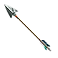 |
| Flèche de Feu | Brûle les ennemis touchés. Très fort contre les ennemis dans les climats froids qui meurent sous les flammes. La flèche s'éteint sous la pluie. Achetable en ville à prix moyennement cher. | 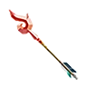 |
| Flèche de Glace | Gèle les ennemis touchés. Très fort contre les ennemis dans les climat chaud qui meurent d'hypothermie. Son achat se fait également en ville à des prix plus abordable que la flèche de feu. | 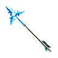 |
| Flèche électrique | Électrifie les ennemis touchés. Libère une lourde décharge électrique à tous les ennemis aux alentours leur inffligeant | 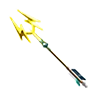 |
| Flèche Explosive | Explose aux contact. De loin ma flèche préférée, elle produit une quantité ASTRONOMIQUE de dégats lorsqu'elle est tirée par l'Arc du Dieu Bestial. N'explose pas sous la pluie mais explose aussitôt dégainée sur le Volcan. Très chère mais vaut la peine. | 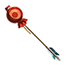 |
| Flèche Archéonique | Flèche puissante mais non-accessible à tous. Elle tue en un coup les Gardiens si ils sont touchés à l'oeil et aspire les ennemis "classiques" les tuant mais ne laissant aucun loot (= les objets laissés par les ennemis une fois tués), super efficace contre Le Fléau. Achetable chez Faras. | 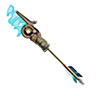 |
| Flèche de Lumière | Flèche exclusive à l'Arc de Lumière, non récupérable, elle inflige des dégâts à La Forme Maléfique de Ganon lors de l'assaut final... je n'en dis pas plus. | 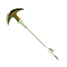 |